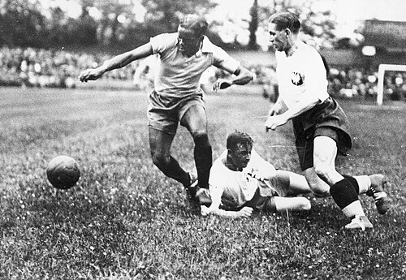

The profile
Leônidas
Leônidas da Silva was born in Rio de Janeiro and entered the city’s club football scene as a young forward. He developed into one of Brazil’s first nationally celebrated players.
He played for several Brazilian clubs, most notably Flamengo and São Paulo. A nimble and inventive forward, he was associated with acrobatic finishing and the confidence to attempt difficult shots. His flair made him one of Brazil's first widely known football stars.
Leônidas led Brazil's attack at the 1938 World Cup with seven goals, the most in the tournament. He scored in the dramatic 6–5 win over Poland and continued to threaten as Brazil advanced through the knockout rounds. Brazil lost to eventual champion Italy in the semi-finals but won the third-place match, giving the country its best World Cup finish to that point.
1934Italy
Round of 16
Round of 16 Spain3 : 1Brazil
- IRARAGORRI18′ · pen.
- IRARAGORRI25′
- Isidro LANGARA29′
- LEONIDAS55′
Spainhome
Starting lineup
- Ricardo ZAMORA
- I QUINCOCES
- CIRIACO
- MARCULETA
- CILAURREN
- IRARAGORRI
- Simon LECUE
- Jose MUGUERZA
- GOROSTIZA
- LAFUENTE
- Isidro LANGARA
Substitutions
- No substitutions
Brazilaway
Starting lineup
- PEDROSA
- LUIZ LUZ
- SYLVIO HOFFMANN
- CANALLI
- TINOCO
- MARTIM
- WALDEMAR DE BRITTO
- PATESKO
- ARMANDINHO
- LEONIDAS
- LUISINHO
Substitutions
- No substitutions
1938France
Third place
Round of 16 Brazil6 : 5Poland
- LEONIDAS18′
- ROMEU25′
- PERACIO44′
- PERACIO71′
- LEONIDAS93′
- LEONIDAS104′
- Fryedryk SZERFKE23′ · pen.
- Ernest WILIMOWSKI53′
- Ernest WILIMOWSKI59′
- Ernest WILIMOWSKI89′
- Ernest WILIMOWSKI118′
Brazilhome
Starting lineup
- BATATAIS
- DOMINGOS DA GUIA
- MACHADO
- MARTIM
- AFONSINHO
- ZEZE PROCOPIO
- HERCULES
- LOPES
- PERACIO
- LEONIDAS
- ROMEU
Substitutions
- No substitutions
Polandaway
Starting lineup
- Edward MADEJSKI
- Antoni GALECKI
- Wladyslaw SZSZEPANIAK
- Ewald DYTKO
- Wilhelm GORA
- Erwin NYC
- Ernest WILIMOWSKI
- Ryszard PIEC
- Leonard PIONTEK
- Fryedryk SZERFKE
- Gerard WODARZ
Substitutions
- No substitutions
Quarter-final Brazil1 : 1Czechoslovakia
- LEONIDAS30′
- Oldrich NEJEDLY65′ · pen.
Brazilhome
Starting lineup
- WALTER GOULART
- DOMINGOS DA GUIA
- MACHADO
- MARTIM
- AFONSINHO
- ZEZE PROCOPIO
- HERCULES
- LOPES
- PERACIO
- LEONIDAS
- ROMEU
Substitutions
- No substitutions
Czechoslovakiaaway
Starting lineup
- Frantisek PLANICKA
- Jaroslav BURGR
- Ferdinand DAUCIK
- Jaroslav BOUCEK
- Josef KOSTALEK
- Vlastimil KOPECKY
- Oldrich NEJEDLY
- Antonin PUC
- Josef LUDL
- Jan RIHA
- Ladislav SIMUNEK
Substitutions
- No substitutions
Quarter-final replay Brazil2 : 1Czechoslovakia
- LEONIDAS57′
- ROBERTO63′
- Vlastimil KOPECKY25′
Brazilhome
Starting lineup
- WALTER GOULART
- JAU
- NARIZ
- BRANDAO
- BRITTO
- ARGEMIRO
- ROBERTO
- PATESKO
- LEONIDAS
- LUISINHO
- TIM
Substitutions
- No substitutions
Czechoslovakiaaway
Starting lineup
- Karel BURKERT
- Jaroslav BURGR
- Ferdinand DAUCIK
- Jaroslav BOUCEK
- Vlastimil KOPECKY
- Josef KOSTALEK
- Vaclav HORAK
- Arnost KREUZ
- Josef LUDL
- Karel SENECKY
- Oldrich RULC
Substitutions
- No substitutions
Third-place match Brazil4 : 2Sweden
- ROMEU44′
- LEONIDAS63′
- LEONIDAS74′
- PERACIO80′
- Sven JONASSON28′
- Arne NYBERG38′
Brazilhome
Starting lineup
- BATATAIS
- DOMINGOS DA GUIA
- MACHADO
- AFONSINHO
- ZEZE PROCOPIO
- BRANDAO
- PERACIO
- PATESKO
- LEONIDAS
- ROMEU
- ROBERTO
Substitutions
- No substitutions
Swedenaway
Starting lineup
- Henock ABRAHAMSSON
- Ivar ERIKSSON
- Erik NILSSON
- Erik ALMGREN
- Arne LINDERHOLM
- Kurt SVANSTROM
- Ake ANDERSSON
- Harry ANDERSSON
- Sven JONASSON
- Arne NYBERG
- Erik PERSSON
Substitutions
- No substitutions